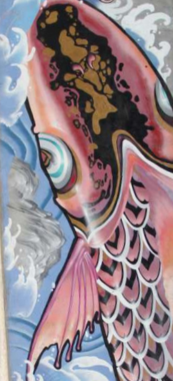

About XAIU
Xi'an International University (XAIU) is a private institution of higher education with the accreditation of China's Ministry of Education for four-year baccalaureate programs. Founded in 1992 and located in the heart of Xi'an, the most historic city in China, the University sits on 1.26 million square meters of land, has about 20,000 students and 1,700 faculty and staff. The University includes 8 colleges offering 67 major fields of study, which cover Management, Economics, Humanities, Medicine, Engineering, Agriculture, and Arts. It has partnered with famous universities and enterprises both at home and abroad to cultivate bachelor and master talents. Over nearly 30 years of development, XAIU has grown into a multi-discipline comprehensive university.
The University embraces students from all over the world. The well-designed campus facilities and extracurricular activities give them a chance to enhance their academic and practical skills, enrich their minds, and raise their sense of social responsibility.
20,000 students
enrolled at XAIU on average every year. Graduates have options for topping up higher degree programs, employment, setting up their own businesses or studying overseas, which are in the lead among private universities in China.
1.26 km²
of campus that combines Chinese and European style of architecture with lakes, hills and pavilions and a magnificent sports center.
200,000 alumni
Resource-sharing business association consisting of global alumni entrepreneurs with first-hand industry experience and offering employment opportunities.
30 million RMB
annual scholarships for one third of students.
Message from the Chairman
“We are working towards a great cause that co-exists with human being, our ideal will not be swung by any difficulties, and our signpost is always pointing to the future”.
- Huang Teng, XAIU Chairman of the Board of Trustees
University Management
Huang Teng
Chairman of the Board of Trustees
Wang Rihua
Rector
Min Xiaoping
Chancellor
Pan Jun
Head of Teaching & Research
Liu Yajie
Head of Student Affairs
Dong Yulong
Head of Administration
Zhang Xiaogang
Acting Head of Logistics

Guo Xinhua
Acting Head of International Affairs
Campus Culture
“The fish that evolves into a dragon”
The motto “the fish that evolves into a dragon”, at the core of all our activities, is the spirit of the campus culture, that sits in an area, where, according to the legend, fish turned into dragons. Following on this tradition, the University will strive to live up to this motto.
This legendary area, called “Yuhuazhai” (the Yuhua Village), was the place where Princess Yuhua, daughter of King Wu of the Zhou Dynasty, built a stage to offer sacrifices to Heaven (The remains from the Yangshao Civilization - around B.C. 5000 - B.C.3000). This stage was found during the construction of the campus and a beautiful park was built around that platform. In the Tang Dynasty (618 A.D. - 907 A.D.), this area was the auspicious place where imperial examination candidates took a sojourn and pray for good luck, hoping that they could be someone useful to society, in other words, to become a dragon. After that, people change the name “Yuhua” (the flower in rain) into “Yuhua 鱼化” (the fish evolves into a dragon). Since those days, it is said that whoever comes to this land will achieve their goals and fulfill their aspirations. Our core values are aligned with our motto, and we wish that not only all XAIU students, but also all academics and visitors achieve their dreams whilst in our campus.
Values
Vision: “Everyone should be able to embark on a learning experience at any age, in any kind of institution, with any scholar, anywhere in the world”.
Mission: “The fish that evolves into a dragon”.
Motto: To learn and integrate best academic practices, striding forward and exploring new trails.
Ethos: To devote ourselves to education with commitment, gratitude and diligence.
Academic Staff Code: Student-centered, cultivating morality.
Student Code: Developing individuality and building character.
University Goals
Striving to build a world-class private university with distinctive characteristics of internationalization, application-oriented.
University Positioning
Xi’an International University is a high level but non-profit institution offering mainly undergraduate education featured by internationalization, application and integration.
University Philosophy
To adhere to the Chinese Communist Party’s educational guidelines, and having at its core values cultivating morality, enhancing education quality, developing students’ individuality, and nurturing competent socialist cause builders and reliable successors with commitment, gratitude and diligence.
Awards & Achievements
- One of three case studies in China studied by Harvard Business School and the only representative of China’s higher education development mode;
- National Top 50 Universities and Colleges of Outstanding Experiences in Creativity and Entrepreneurship Education awarded by China’s Ministry of Education, the only university among higher education institutions in northwest China;
- Award of “First-class University Construction Unit” from the Department of Education of Shaanxi Province, one of the three nominated undergraduate private universities in Shaanxi province;
- One of the 10 pilot projects of the “One-stop Service” student community comprehensive management mode by the Ministry of Education.